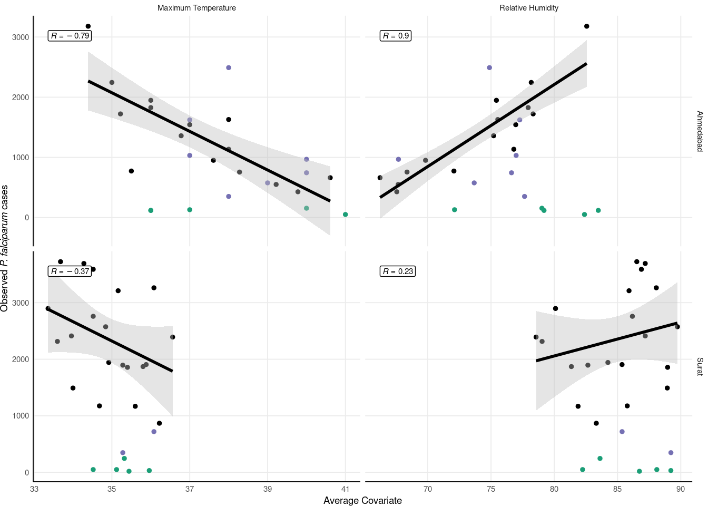
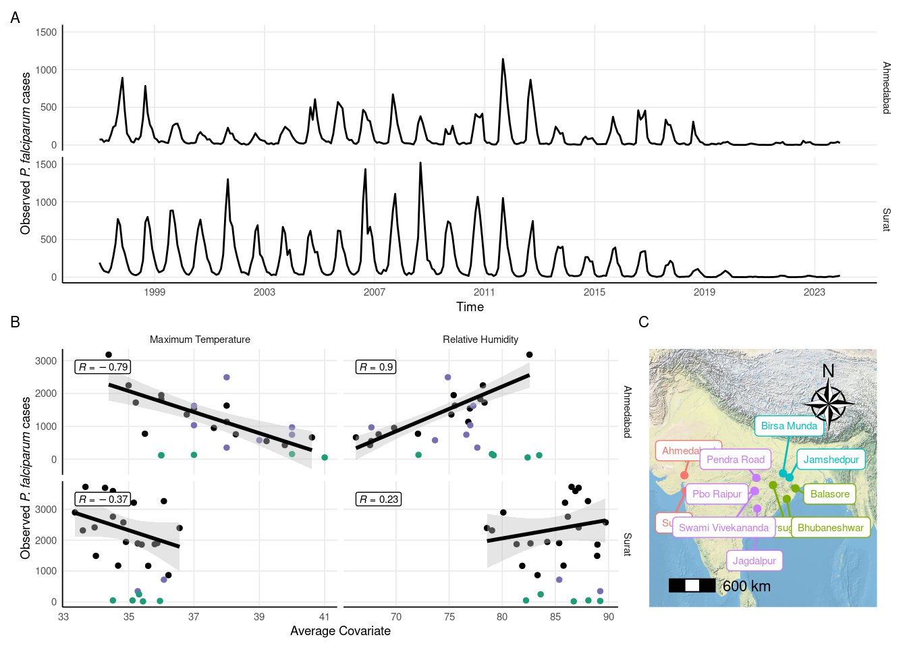

# A tibble: 6 × 5
year cov PF city covariate
<dbl> <dbl> <dbl> <chr> <chr>
1 1997 78.2 2245 Ahmedabad Relative Humidity
2 1998 77.9 1827 Ahmedabad Relative Humidity
3 1999 69.8 951 Ahmedabad Relative Humidity
4 2000 67.7 550 Ahmedabad Relative Humidity
5 2001 66.2 662 Ahmedabad Relative Humidity
6 2002 67.6 428 Ahmedabad Relative Humidity
Simple feature collection with 11 features and 5 fields
Geometry type: POINT
Dimension: XY
Bounding box: xmin: 72.635 ymin: 19.083 xmax: 86.933 ymax: 23.314
Geodetic CRS: WGS 84
# A tibble: 11 × 6
state id name lat long geometry
* <fct> <chr> <fct> <dbl> <dbl> <POINT [°]>
1 Gujarat 426470-99999 Ahmedabad 23.1 72.6 (72.635 23.077)
2 Jharkhand 427010-99999 Birsa Munda 23.3 85.3 (85.322 23.314)
3 Chhattisgarh 427790-99999 Pendra Road 22.8 81.9 (81.9 22.767)
4 Jharkhand 427980-99999 Jamshedpur 22.8 86.2 (86.169 22.813)
5 Gujarat 428400-99999 Surat 21.2 72.8 (72.833 21.2)
6 Chhattisgarh 428740-99999 Pbo Raipur 21.2 81.6 (81.65 21.233)
7 Chhattisgarh 428750-99999 Swami Viveka… 21.2 81.7 (81.733 21.183)
8 Odisha 428860-99999 Jharsuguda 21.9 84.0 (84.05 21.914)
9 Odisha 428950-99999 Balasore 21.5 86.9 (86.933 21.517)
10 Odisha 429710-99999 Bhubaneshwar 20.2 85.8 (85.818 20.244)
11 Chhattisgarh 430410-99999 Jagdalpur 19.1 82.0 (82.033 19.083)Loading basemap 'world_physical_map' from map service 'esri'...